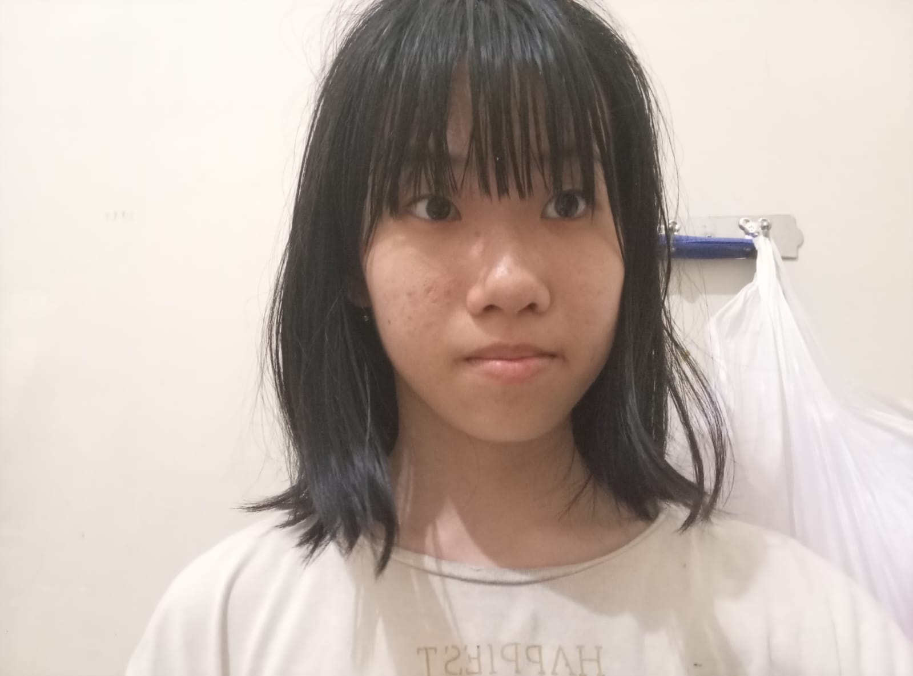

Saya sangat tertarik dengan dunia teknologi, hobi saya adalah menggambar dan menuangkan berbagai ide kreatif ke dalam bentuk visual. Saya memilih masuk jurusan TKJ karena ingin mempelajari bidang komputer dan teknologi lebih dalam agar nantinya lebih mudah mendapatkan pekerjaan yang mapan di era digital ini.
Cita-cita saya di masa depan adalah menjadi seorang game developer yang andal dan sukses. Melalui keahlian menggambar serta ilmu teknologi yang saya pelajari, saya berharap bisa menciptakan karya game sendiri yang menarik dan membanggakan.